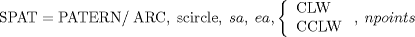
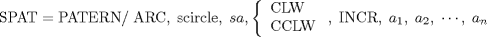
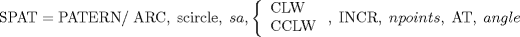

| 4.5. Pattern Definition Statement | ||
|---|---|---|
 |
Chapter 4. Point-To-Point Programming |  |
| 4.5. Pattern Definition Statement | ||
|---|---|---|
| |
Chapter 4. Point-To-Point Programming | |
A pattern is a set of one or more points. The maximum number of points that can be included in a pattern is 330. Pattern definition statements may be constructed in such a way that a pattern containing the full 330 points cannot be defined. In this case a diagnostic is issued. If this occurs, the desired pattern can always be defined by breaking the definition statement up into two patterns and adding them together. Even the very worst case pattern definition statement can always define at least 230 points. It is very unusual to encounter a pattern definition that cannot define a full 330 points. Patterns may be defined using the formats listed below. Pattern definitions may not be nested.
A linear pattern is a set of point locations, all of which lie on a straight line.
The start and end points are included in npoints.
SPAT = PATERN/ LINEAR, spoint1, spoint2, npoints
The start point is included in npoints. The distance between the points is equal to the vector magnitude. (See Figure 4.1)
SPAT = PATERN/ LINEAR, spoint, svector, npoints
The start point is not included in npoints. The distance between the points is equal to i. (See Figure 4.1)
SPAT = PATERN/ LINEAR, spoint, svector, INCR, npoints, AT, i
An ARC pattern is a set of point locations, all of which lie on a single circle. The points may be defined in the counterclockwise or clockwise direction by specifying the appropriate modifier as follows:
CLW Clockwise
CCLW Counterclockwise
The angles used in arc PATERN definitions are specified in degrees measured counterclockwise from the positive X axis.

Where sa and ea specify the starting and ending angles, respectively. The number of points includes the starting and ending points in the pattern.

Where sa is the starting angle and a1, a2, ... an define the angular displacements between successive points on the circle in the direction specified by CLW or CCLW. (See Figure 4.3)

Where sa defines the starting angle, and npoints is the number of points (one less than the resultant total number of points) to be generated at an angular displacement specified by angle in the direction indicated by CLW or CCLW. (See Figure 4.3)
A parallelogram pattern is a grid of point locations defined by establishing lines parallel to a specified linear pattern and projecting the points from the original pattern onto those lines. The definition order for the points in a parallelogram pattern will be governed by the following rules:
The first linear pattern in the list defines a "column", the order of which is that of the linear pattern.
A parallelogram pattern will consist of at least one other column parallel to the first column. The points in the second, fourth, and all even-numbered columns will be ordered in the opposite direction from those in odd-numbered columns.
For example, in Figure 4.4 PAT5 contains points 1-7. Points 8-14 in the next row are ordered in the opposite direction; points 15-21 are ordered in the same direction as points 1-7, etc. In this example the first column consists of points 1-7, the second column consists of points 8-14, etc.
SPAT = PATERN/ PARLEL, spat1, spat2
spat1 and spat2 must contain a common point as either their first or last point for this definition.
SPAT = PATERN/ PARLEL, spat, svect, n
spat1 and spat2 must contain a common point as either their first or last point for this definition. (See Figure 4.5)
SPAT = PATERN/ PARLEL, spat, svect, INCR, i, AT, n
Where i specifies the increment in units and n specifies the number of times spat is to be repeated at the specified interval and direction, not including the original pattern. (See Figure 4.5)
SPAT = PATERN/ PARLEL, spat, svect, INCR, i1, i2, ... in
Where i1, i2, ... in will be increments (in units) between columns along the direction specified by svect. (See Figure 4.4)
A random pattern is a collection of point locations not necessarily contained on a line or an arc.
| |  | |
| 4.4. Implication of the ZSURF Statement |  | 4.6. Point-Point Motion Commands |